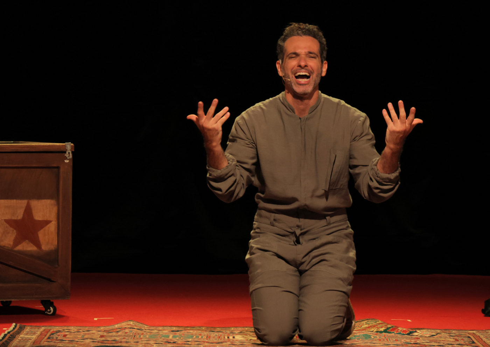

Meu Remédio, com Mouhamed Harfouch, estreia no Teatro Santos Augusta em São Paulo

Dirigida por João Fonseca, a comédia autobiográfica aborda identidade, ancestralidade e aceitação pessoal em curta temporada a partir de 30 de agosto
O ator Mouhamed Harfouch estreia em São Paulo o espetáculo Meu Remédio, no dia 30 de agosto, às 20h, no Teatro Santos Augusta, localizado na região dos Jardins, a poucos passos da Avenida Paulista. A montagem, que já foi sucesso no Rio de Janeiro, ganha curta temporada na capital paulista até 28 de setembro, com apresentações aos sábados e domingos. Dirigida por João Fonseca, a comédia mistura humor e emoção ao revisitar questões de identidade, ancestralidade e aceitação pessoal, inspiradas na trajetória do próprio ator.
Uma narrativa pessoal transformada em teatro
Em Meu Remédio, Mouhamed Harfouch, filho de pai sírio e mãe portuguesa, revisita sua história de vida em um mergulho autobiográfico que ganha forma de espetáculo. O texto, escrito e interpretado pelo ator, reflete sobre o impacto do preconceito, a construção da identidade em um Brasil dos anos 1970 e a busca por pertencimento em meio a diferentes culturas.
“Sou filho de imigrantes sírios por parte de pai e portugueses por parte de mãe. Crescer com um nome tão emblemático em um país em que o preconceito era presente não foi fácil. Essa peça é uma comédia, mas também carrega uma reflexão sobre aceitação e pertencimento. Muitas vezes, o maior remédio é aceitar quem somos”, explica Mouhamed.
O espetáculo reúne humor, sinceridade e música. Entre canções, hits e paródias interpretadas ao vivo, o ator recria personagens que marcaram as duas primeiras décadas de sua vida, costurando memórias pessoais com ficção e provocando o público a refletir sobre sua própria trajetória.
Desafios de ator, autor e produtor
Além de atuar e assinar o texto, Mouhamed também assumiu a produção do espetáculo – um dos maiores desafios de sua carreira. “Produzir e atuar ao mesmo tempo é árduo, mas me senti mais maduro para encarar essa jornada. Com o apoio de amigos como Tadeu Aguiar e Eduardo Bakr, conseguimos força para fazer esse sonho acontecer”, conta.
A direção de João Fonseca, conhecido por musicais biográficos de grande sucesso como Tim Maia – Vale Tudo, Cássia Eller – O Musical e Cazuza – Pro Dia Nascer Feliz, foi fundamental para equilibrar a leveza da comédia com a profundidade emocional da narrativa. “Sem o João, não sei se teria conseguido transitar entre autor e ator de forma tão tranquila. Ele acreditou no projeto desde o início”, afirma Mouhamed.
Uma carreira versátil
Com mais de 40 espetáculos no currículo, Mouhamed Harfouch tem trajetória marcada por diversidade. No teatro musical, esteve em produções como Querido Evan Hansen e Ou Tudo ou Nada, que lhe rendeu indicação ao Prêmio Bibi Ferreira de Melhor Ator em 2016. Na televisão, participou de novelas como Pé na Jaca, Amor à Vida e Órfãos da Terra, além das séries Rensga Hits (Globoplay) e Betinho – No Fio da Navalha (HBO Max).
Em Meu Remédio, ele se reinventa, entregando ao público um espetáculo intimista que reflete sobre identidade, memória e o poder curativo da arte. “Um nome nunca é só um nome. É uma jornada. Meu Remédio é sobre isso: aceitar quem somos é curativo, e a arte salva”, finaliza.
Serviço
Espetáculo: Meu Remédio – comédia autobiográfica com Mouhamed Harfouch
Direção: João Fonseca
Local: Teatro Santos Augusta – Al. Santos, 2159, Jardins, São Paulo – SP
Temporada: 30 de agosto a 28 de setembro de 2025
Sessões: sábados às 20h | domingos às 18h
Ingressos:
Plateia: R$ 120 (inteira) | R$ 60 (meia)
Balcão: R$ 100 (inteira) | R$ 50 (meia) – acesso apenas por escadas fixas
Duração: 75 minutos
Classificação: 10 anos
Capacidade: 240 lugares
Acessibilidade: ingressos para cadeirantes e acompanhantes podem ser reservados pelo e-mail contato@teatrosantosaugusta.com.br
Bilheteria: sábados das 12h30 às 20h30 | domingos das 10h30 às 18h30
Vendas online: Sympla – Teatro Santos Augusta
Estacionamento: serviço terceirizado com manobrista no local